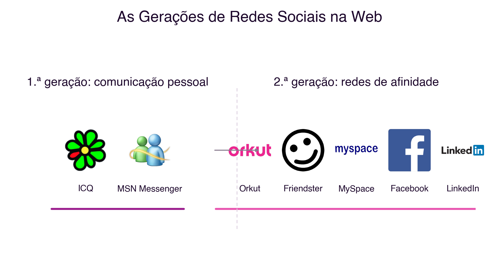
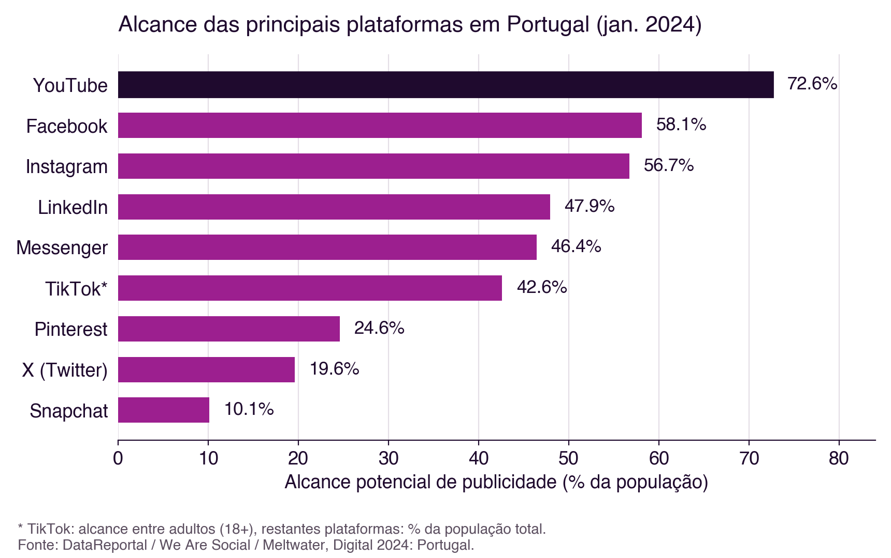

2 Redes Sociais: Fundamentos e Dados Estatísticos
Redes Sociais: Fundamentos e Dados Estatísticos
Introdução
O capítulo anterior estabeleceu uma distinção fundamental: a rede social, enquanto conceito, é anterior à tecnologia (Secção 1.2.1), e aquilo que a computação em rede trouxe foi sobretudo uma mudança de escala, alcance e meio (Secção 1.2.2). Este capítulo aprofunda essa segunda parte: como é que as redes sociais, enquanto fenómeno humano milenar, se transformaram nas plataformas de redes sociais na web que hoje conhecemos, que forma assumiram ao longo do tempo, para que servem e qual a sua adoção real, hoje, em Portugal e no mundo.
2.1 Os Seis Graus de Separação
Em 1967, o psicólogo social Stanley Milgram conduziu um conjunto de experiências que se tornariam uma referência incontornável no estudo das redes sociais. Pediu a centenas de pessoas em diferentes estados dos Estados Unidos que fizessem chegar uma carta a um destinatário final que não conheciam pessoalmente, através da rede de conhecidos diretos de cada participante. O objetivo era medir quantos intermediários, em média, eram necessários para ligar duas pessoas escolhidas ao acaso (Milgram 1967).
Os resultados são frequentemente simplificados. Das centenas de cartas enviadas, apenas uma minoria completou o percurso: a maioria das cadeias interrompeu-se antes de chegar ao destino. Entre as cartas que chegaram, o número médio de intermediários situou-se por volta de cinco a seis. A ideia de que “todos estamos ligados por seis graus de separação” não é, portanto, uma conclusão exata e universal da experiência de Milgram, mas antes uma popularização: a expressão remonta a um conto do escritor húngaro Frigyes Karinthy, publicado em 1929, e só se tornou popular décadas mais tarde através da peça Six Degrees of Separation, de John Guare (1990). O próprio Milgram nunca usou essa expressão nos seus textos.
O que a experiência de Milgram demonstrou de forma mais sólida foi outra coisa, mais interessante para o estudo das redes sociais: que uma rede de relações pessoais, aparentemente local e limitada, tem uma estrutura que permite alcançar qualquer outro nó dessa rede através de um número surpreendentemente pequeno de ligações. Foi precisamente esta propriedade estrutural, a de “mundo pequeno” (small world), que os primeiros sistemas de redes sociais na web foram desenhados para explorar e tornar visível.
2.2 As Gerações de Redes Sociais na Web
As redes sociais na web são ambientes virtuais onde cada participante constrói a sua própria rede de relações, baseada nalgum tipo de ligação com outros participantes. É possível identificar, na sua evolução, três gerações sucessivas de sistemas (Meira et al. 2011):
- Primeira geração: sistemas baseados em comunicação pessoal direta, organizados à volta de listas de contactos para troca de mensagens instantâneas. O
ICQe oMSN Messengersão exemplos característicos desta geração. - Segunda geração: sistemas que procuraram replicar, num ambiente virtual, as redes de afinidade e de conhecidos já existentes no mundo real. O
Orkut, oFriendster, oMySpace, oFacebooke oLinkedInformalizaram esse tipo de relacionamento, com tal sucesso que as redes sociais se tornaram mais populares do que o correio eletrónico. - Terceira geração: sistemas em que as redes sociais passaram a apoiar diretamente a resolução de problemas concretos: armazenar e trocar experiências entre pessoas em situações semelhantes, gerir conhecimento organizacional, manter memória institucional e gerar ligações novas entre pessoas e organizações que não se conheciam previamente.
A Figura 2.1 ilustra a primeira e a segunda geração com os logótipos reais das plataformas referidas: note-se como a segunda geração já inclui plataformas que, mais tarde, viriam a dominar por completo o panorama das redes sociais.

2.2.1 E depois da terceira geração?
Esta classificação em três gerações foi proposta em 2011, quando o Facebook, o Orkut e o LinkedIn definiam o panorama das redes sociais. Entretanto, mais de uma década de evolução tecnológica sugere uma transformação suficientemente profunda para justificar um novo patamar.
As primeiras três gerações partilham um traço em comum: a visibilidade de um conteúdo depende, sobretudo, da rede de ligações explícitas do utilizador, o chamado grafo social (social graph), ou seja, quem segue quem. O TikTok, popularizado a partir de 2018, alterou este princípio de forma estrutural: o seu algoritmo de recomendação, a “Para Ti” (For You), decide o que mostrar a cada utilizador com base sobretudo no comportamento observado (tempo de visualização, interações, semelhança de conteúdo), e não em quem esse utilizador segue. Passa-se, assim, de um grafo social para um grafo de interesses (interest graph): a proximidade que importa deixa de ser “quem conheces” e passa a ser “o que consomes”. Este modelo foi progressivamente adotado pelas restantes plataformas, incluindo o Instagram e o YouTube, através dos seus formatos de vídeo curto (Reels, Shorts).
Representando cada rede como um grafo, um conjunto de nós ligados por arestas, a diferença entre os dois modelos torna-se visível (Figura 2.2). No grafo social, os nós são pessoas e as arestas representam ligações explícitas entre elas: quem segue quem, quem é amigo de quem. No grafo de interesses, a proximidade deixa de ser entre pessoas e passa a ser entre uma pessoa e os temas com que interage: duas pessoas podem nunca se ter seguido, nem se conhecerem, e ainda assim serem “vizinhas” na rede, por consumirem o mesmo tipo de conteúdo. A forma de calcular e visualizar estes grafos, através de métricas como distância, centralidade ou densidade, será desenvolvida no capítulo seguinte.

O sociólogo Paolo Gerbaudo descreve esta mudança como a passagem de “públicos em rede” (networked publics), organizados por ligações interpessoais explícitas, para “públicos agrupados” (clustered publics), organizados algoritmicamente por semelhança comportamental (Gerbaudo 2026). Segundo o autor, esta transformação tem implicações que vão além da experiência individual: torna mais opaco o funcionamento dos sistemas que decidem o que cada pessoa vê, e acentua a fragmentação do espaço público digital em grupos de interesse cada vez mais fechados sobre si próprios. Este ponto liga-se diretamente ao “lado sombrio” da sociedade em rede já discutido no capítulo anterior (Secção 1.5), e será retomado quando se estudarem os sistemas de recomendação.
2.3 Finalidades das Redes Sociais
Independentemente da geração ou da lógica de funcionamento, as redes sociais podem também classificar-se pela finalidade principal para que foram desenhadas (Meira et al. 2011):
- Partilha: publicação e distribuição de conteúdo, como fotografias ou vídeos (exemplos históricos:
Flickr,YouTube) - Profissional: manutenção de contactos e relações de trabalho (exemplo:
LinkedIn) - Plataforma: infraestrutura de identidade digital que outros serviços usam para autenticação e interligação (exemplo histórico:
Ning) - Entretenimento: interação social com fins predominantemente lúdicos (exemplos históricos:
MySpace,hi5)
A Figura 2.3 reúne os logótipos das plataformas que melhor ilustram cada uma destas quatro finalidades.

Esta classificação foi proposta em 2011, e a fronteira entre estas quatro finalidades está hoje ainda mais esbatida do que estava então: o Instagram acumula partilha, entretenimento e, cada vez mais, comércio; o LinkedIn passou a distribuir conteúdo em formato de vídeo curto, tradicionalmente associado ao entretenimento; e várias plataformas asiáticas, como o WeChat, funcionam como “superaplicações” que integram mensagens, pagamentos, comércio eletrónico e serviços públicos num único ambiente. A tendência dominante não é a especialização, mas a convergência de finalidades numa mesma plataforma.
2.4 A Adoção das Redes Sociais em Números
Segundo o relatório Digital 2024 da We Are Social/Meltwater, com análise da Kepios, já referido no capítulo anterior, existiam 5,04 mil milhões de identidades de utilizador ativas em redes sociais no início de 2024, o equivalente a 62,3% da população mundial (DataReportal, Meltwater and We Are Social 2024a). Comparando este valor com os 5,35 mil milhões de utilizadores de Internet estimados para o mesmo período (Secção 1.6), conclui-se que cerca de 94% de quem usa a Internet usa também, pelo menos, uma rede social: a adoção de redes sociais está hoje praticamente equiparada à adoção da própria Internet. O utilizador típico despende, em média, 2 horas e 23 minutos por dia em redes sociais (DataReportal, Meltwater and We Are Social 2024a).
Em Portugal, o mesmo período regista 7,43 milhões de utilizadores de redes sociais, o equivalente a 72,6% da população total, para 8,84 milhões de utilizadores de Internet (86,4% da população) (DataReportal, Meltwater and We Are Social 2024b). A adoção em Portugal é, portanto, superior à média mundial em ambas as dimensões (Figura 2.4).

As plataformas mais alcançadas por publicidade em Portugal, no início de 2024, eram o YouTube (72,6% da população), o Facebook (58,1%), o Instagram (56,7%), o LinkedIn (47,9%) e o Facebook Messenger (46,4%), seguidos do TikTok, já com 42,6% de alcance entre adultos (DataReportal, Meltwater and We Are Social 2024b) (Figura 2.5).

Vale a pena notar que esta métrica, alcance publicitário potencial, não é diretamente comparável ao número de utilizadores ativos mensais divulgado por cada plataforma a nível mundial: por essa métrica, o Facebook continua a ser a maior rede social do mundo, com 3,05 mil milhões de utilizadores ativos mensais (DataReportal, Meltwater and We Are Social 2024a). Alcance publicitário e utilizadores ativos mensais são métricas diferentes, calculadas de forma diferente, pelo que não devem ser comparadas diretamente entre si.
2.5 Síntese
Este capítulo aprofundou o estudo das redes sociais, enquanto instância tecnológica de um fenómeno social pré-existente, introduzido no capítulo anterior:
- A experiência de Milgram (1967) demonstrou a propriedade de “mundo pequeno” das redes sociais, popularizada, de forma imprecisa, como “seis graus de separação” (Milgram 1967)
- As redes sociais na web evoluíram em três gerações sucessivas, marcadas pela comunicação pessoal, pela replicação de redes de afinidade reais e pela resolução colaborativa de problemas (Meira et al. 2011)
- Uma quarta transformação, ainda sem consenso quanto ao nome, está em curso desde 2018: a passagem de um grafo social explícito para um grafo de interesses definido algoritmicamente (Gerbaudo 2026)
- As quatro finalidades clássicas das redes sociais, partilha, profissional, plataforma e entretenimento, tendem hoje à convergência numa mesma plataforma, em vez de à especialização
- A adoção de redes sociais está hoje próxima da adoção da própria Internet, tanto a nível mundial como em Portugal (DataReportal, Meltwater and We Are Social 2024a, 2024b)
2.6 Para Refletir
O algoritmo de recomendação de conteúdo, ao decidir o que cada pessoa vê com base no seu comportamento e não nas suas ligações explícitas, tem um poder de influência muito maior do que uma lista de amigos jamais teve. Que responsabilidade cabe a uma plataforma quando é o seu algoritmo, e não as escolhas explícitas do utilizador, a decidir a que conteúdo esse utilizador é exposto?
Pensa também na tua própria utilização de redes sociais: consegues identificar, nas plataformas que usas, exemplos de grafo social e de grafo de interesses a funcionar em simultâneo? E as quatro finalidades descritas neste capítulo, partilha, profissional, plataforma e entretenimento, aplicam-se ainda com nitidez às plataformas que usas diariamente, ou já convergiram todas numa só?